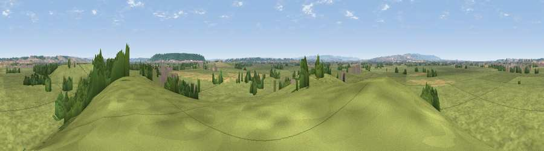

Viewpoint near Middlezoy
#27179 in England · top 75% of its area beats it · near Middlezoy · footpathWhere it is
The exact computed spot (ST 36675 32875). Click the marker for map links.
Public access: a public right of way passes within 18 m of this spot. Computed from Natural England's CRoW access layer and OpenStreetMap rights of way — not the legal definitive map. Always verify locally.
The view, rendered

A 360° render of this exact spot computed from the terrain model, tree cover and land cover — summer colours, afternoon light, calibrated against photographs of famous viewpoints. Real trees, hedges and buildings will differ in detail.
The panorama
Grey silhouette: terrain skyline in each direction (720 bearings, Earth curvature and refraction included). Dashed green: skyline with trees (+15 m) and buildings (+8 m) as obstacles. Blue strip: how far the ground is visible on each bearing.
Where the view opens
Wedge length = distance to the farthest visible ground on that bearing (vegetation-aware). Rings at 10, 25 and 50 km.
What fills the view
84% grassland · 7% cropland · 7% woodland · 1% built-up
Angular shares of the visible panorama (visual magnitude), not map area. Landscape diversity 0.25 (0–1 Shannon).
Key numbers
More beautiful places nearby
The staircase of upgrades: each row has a higher view potential than everything closer. Driving times are estimates from straight-line distance, calibrated against real road routing — check an actual route before setting out.
| Place | Direction | Drive | Score |
|---|---|---|---|
| Viewpoint near Burrowbridge | SSW · 2 km | ~6 min | 48.6 |
| Viewpoint near Aller | ESE · 5 km | ~10 min | 64.2 |
| Socombe Hill | NNE · 6 km | ~12 min | 76.4 |
| Viewpoint near Enmore | W · 16 km | ~28 min | 77.6 |
| Viewpoint near Broomfield | W · 17 km | ~30 min | 78.5 |
| Cothelstone Hill | W · 18 km | ~30 min | 82.1 |
| Viewpoint near West Bagborough | W · 19 km | ~32 min | 84.3 |
| Wills Neck | W · 20 km | ~34 min | 85.7 |
51.09167, -2.90560 · source: screening · position refined by local search. Computed location — check access rights before visiting.